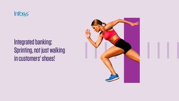

“
By slashing
#testing
time from 3 weeks to 2 hours, we enabled AIMIA to deliver new applications faster than ever before. Watch the video to know more bit.ly/2KPpbG0
”
about 13 hours ago

“
Unified app experience after mergers, is helping large corporations ensure seamless
#CX
. Learn how Infosys helped 2 major
#banks
delight their customers with a unified app, aligning their business objectives. Read more: infy.com/2NBdH6s
#NavigateYourNext
pic.twitter.com/dKlzDe8xPn
”
a day ago
“
Infosys
@PurposefulAI
is scaling
#agile
#digital
to accelerate R&D for a leading
#pharma
company. Read more here infy.com/2J0jWgR
#NavigateYourNext
pic.twitter.com/Ketfq3KG3s
”
3 days ago
“
We delivered a
#digital
platform on
@AWS
that improved on-demand delivery to customers by 40% for a leading Australian
#WealthManagement
company. Know how we did it. infy.com/2J0htD7
#NavigateYourNext
pic.twitter.com/CnAK5WG2s6
”
4 days ago
“
0
”
5 days ago
Ingenious is the annual inter B-School competition conducted by Infosys for select Business schools across the country. Traditionally, 15 colleges have been in the race for the coveted title of Ingenious winners. This year the stakes get higher with a whopping 40 new colleges in the mix. Teams from these 55 participating colleges across India will now battle it out & only the best will take home the Champions’ Trophy. Exciting prizes worth INR 5 Lacs and certificates are up for grabs through every stage of the competition. Final year students in the top 2 winning teams will also be presented an opportunity to appear for a Pre-Placement Interview with Infosys. The competition will have 3 rounds culminating to a Grand Finale at Infosys Corporate Headquarters, Bangalore. Register at www.ingenious.infosys.com
More Posts